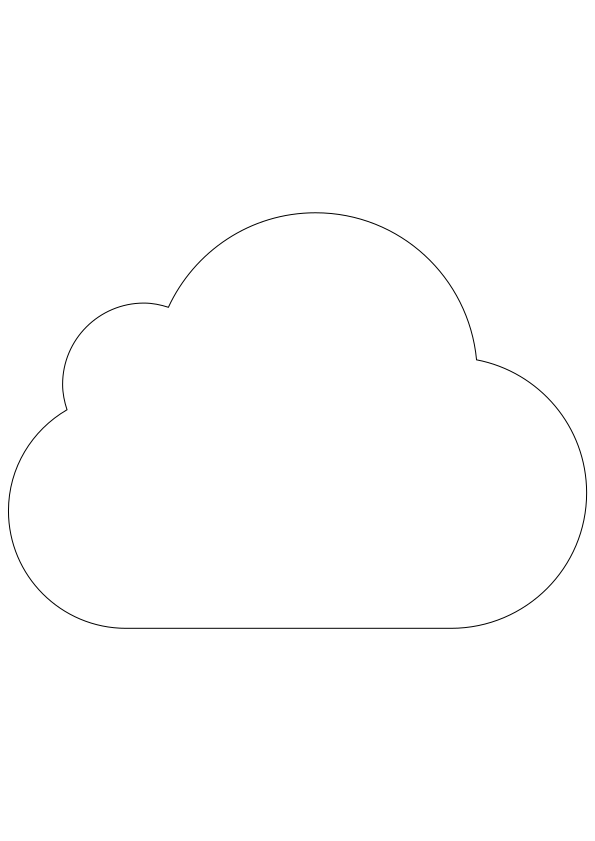

Debaise Jonathan Web Designer

Hello people from earth ! I’m a little creature from the cloud. I live up here for your own good by creating stuff that you can interact with to provide what you’re looking for even if you don’t know what it is yet.
I use my mighty web designer powers like JavaScript to bring concepts to life !
Otherwise, I like lots of the human being’s hobbies like listening to great music tracks (right now I’m into Stoner Rock/Metal and Progressive Rock/Metal) while drinking a Belgian beer or going out with my beloved one.
But I especially like the long nights of coding, this is what my life is committed to. So let met help you to make the Internet a better place for you, come find me in the cloud !